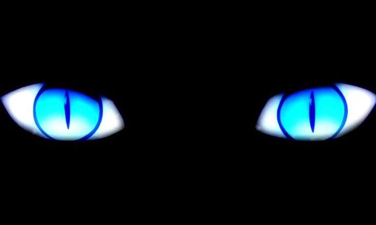
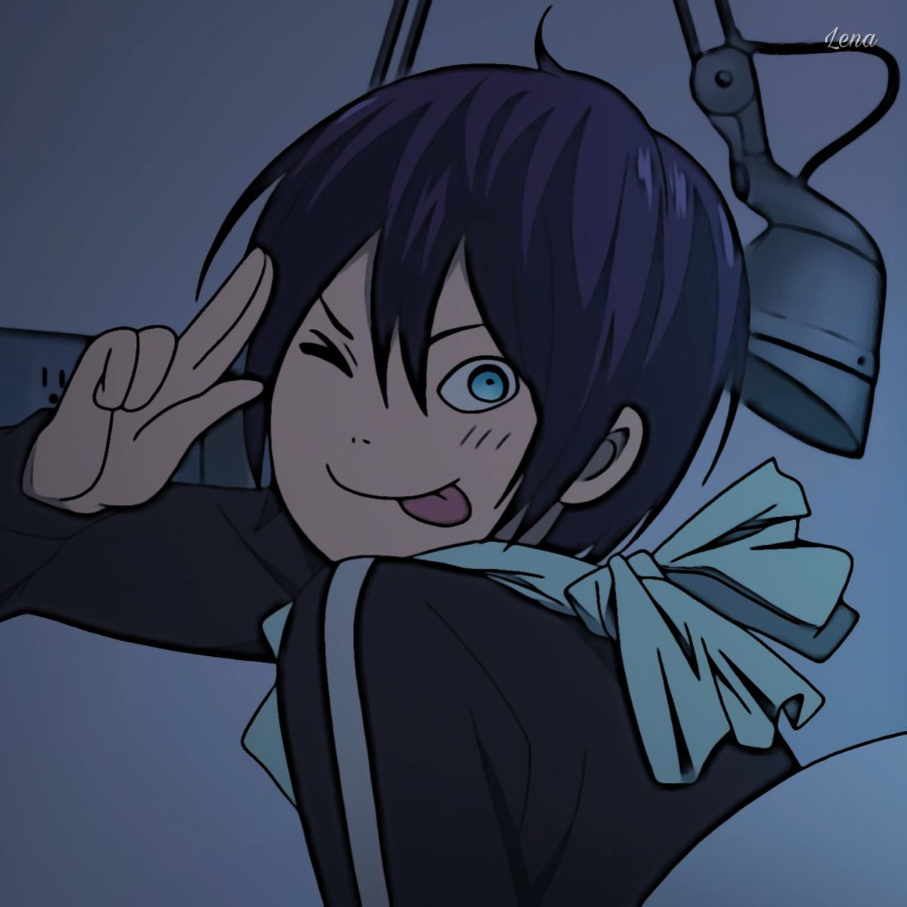

About Yagami Yato
Yato is recognized by his distinctive blue tracksuit and a scarf covering his face. He wields a sacred weapon called "Sekki," which can transform into a katana when needed. Throughout the series, Yato's character undergoes development as he grapples with issues of identity, his past, and his desire to become a renowned god.
Yatos Characteristic
- He is childish or gullible
- Yato can be mischievous,crude,and unpredictable in his behavior
- wise and very serious when the situatins requires it